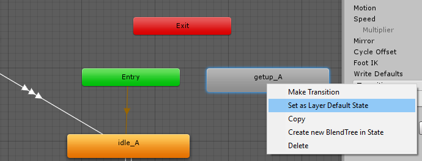
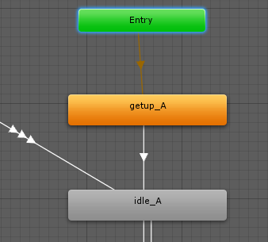
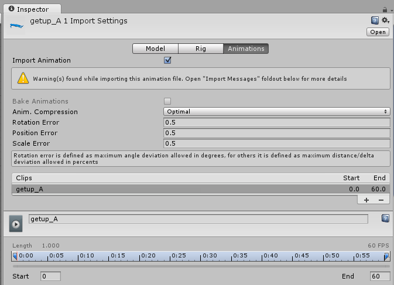
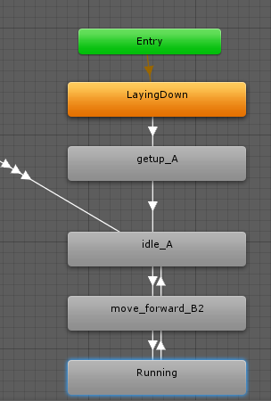

For more immersion, we can start the Butcher's initial animation from laying down, to standing, as if he was just waking up.
Under the FightingMotionsVolume1/FBX, look for the getup_A animation, and drag up into the Animator Window.
Right click on the getup_A State, and select Set Layer as Default State

Add a new Bool Parameter called IsAlive.
Then, add a Transition from getup_A to idle_A, with a Transition Condition on IsAlive is true.

Play the Animation. The Butcher stands up immediately.
That's because the Entry state is now pointing to the getup_A state. We cannot set a transition on the Entry State to the next State, so it automatically fires the getup_A State. How can we make the Butcher stay laying down?
Find the getup_A animation in the Project Window, and select it. Press Ctrl-D to duplicate it, which gives you "getup_A 1". Select the new Animation "getup_A 1", and open its Inspector window

By looking at the Animation clip, we see it Start 0, and Ends at 60. Adjust the End value to 0.1, so the entire animation loops around the first frame, which is of the Butcher laying down. Click on the Loop Time, and Loop Pose as well. Click on Apply to save the changes.
Drag the new "getup_A 1" animation into the Animator window, and rename LayingDown.
Right click on the new state and select "Set Layer as Default State", and set a Transition from it to getUp_A, with the Transition Condition of IsAlive.

Now rePlay the Animation. the Butcher moves into the laying down state, and continues to lay down until the IsAlive Parameter is clicked, then he stands up, ready to fight.
Created with the Personal Edition of HelpNDoc: Easily create Help documents